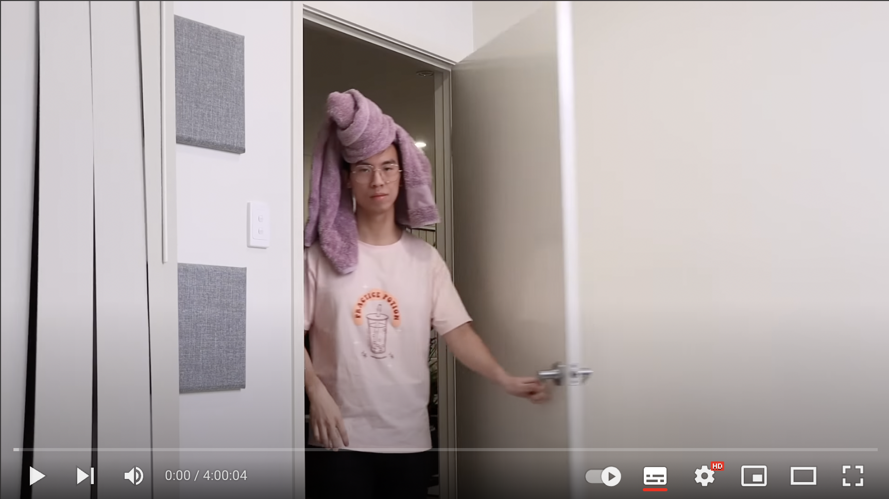

4 Hours of Asian Mum to Help You Focus on Practising/Studying/Working
TwoSetViolin
398万位订阅者
241万次观看 6个月前
Practice Apparel!: https://www.twosetapparel.com
Follow TwoSet Apparel: https://www.twosetapparel.com
Submit your music memes: https://www.twosetapparel.com

TwoSet Violin & SSO: Mendelssohn Violin Concerto
TwoSetViolin
98万次观看
1年前

Attempting ABRSM Sight-Reading Test of Every Grade
TwoSetViolin
116万次观看
1年前

Reacting to Musicians Ranking Themselves by Talent
TwoSetViolin
121万次观看
1年前

6 Musicians Argue Why Their Instrument is the Best
TwoSetViolin
87万次观看
1年前

Classical Violinists Rank Music Movie Scenes
TwoSetViolin
86万次观看
1年前

We Play Our Fans’ Musical Compositions (Ep. 1)
TwoSetViolin
469万次观看
2年前

We Work at a Music Store For a Day
TwoSetViolin
147万次观看
2年前

We Just Offended This World-Class Violinist
TwoSetViolin
73万次观看
1年前

5 Levels of String Quartet Sightreading
TwoSetViolin
130万次观看
1年前

Never Have I Ever Ft. Ray Chen
TwoSetViolin
84万次观看
9个月前
Never Have I Ever Ft. Ray Chen
TwoSetViolin
84万次观看
9个月前
Never Have I Ever Ft. Ray Chen
TwoSetViolin
84万次观看
9个月前
7,227 条评论
排序方式
添加评论…